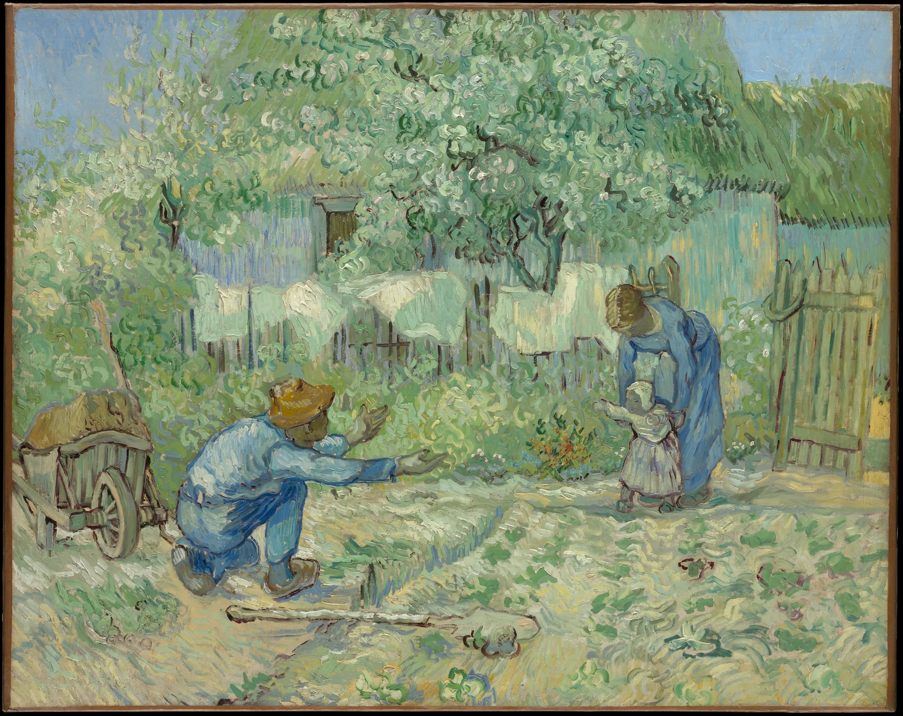

Before the child arrives, the embrace is already there.
Opposing gestures turn empty ground into the scene’s emotional passage.
An analogous blue-green field; soft near-complementary ochre and blue.
Pale touches spread across the garden; blue-green shadows share its daylight.
Suggested design colours, not artwork measurements or pigment recipes.
A photograph after Millet, gridded and reinterpreted in colour.[1]
Vincent van Gogh · 1853–1890 Made in care at Saint-Rémy, January 1890.[1]
He lowers himself first, placing the embrace within the child’s reach.
Place subjects apart, gestures inward. Try a quarter-frame gap between them.
60% paper + 30% grey-green + 10% blue. Add a tiny ochre cue for warmth.
#F3F1E7 / #829886 / #416B91 / #B48A3A
Suggested design colours, not artwork measurements or pigment recipes.
Vincent van Gogh · 1890
The Metropolitan Museum of Art · 64.165.2
Public-domain artwork; museum open image: CC0.
Rights belong to creators where applicable. Independent commentary.
![[2] Original image](https://images.metmuseum.org/CRDImages/ep/original/DP124808.jpg){kind=link}